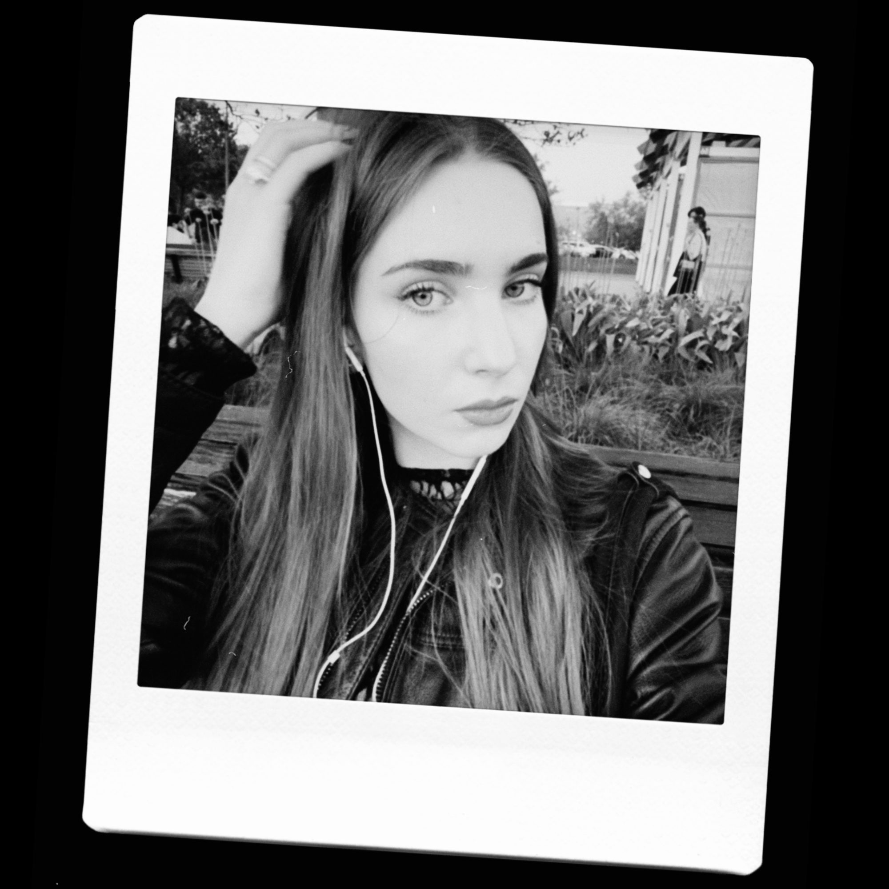

Мультидисциплинарный подход к визуальным системам и интерфейсам
Фокус — структура, визуальный язык и адаптация под контекст
#айдентика
#мобильные приложения
#графический дизайн
#предметный дизайн 3Д
Sip Ai
Mobile Application / 2025
Приложение, которое подбирает коктейли под настроение, блюдо или ингредиенты, что уже есть дома.
Люди хотят готовить интересные напитки дома, но теряются: не знают, что выбрать, как подобрать к моменту и что смешать из случайного набора бутылок.
Нужно было убрать страх ошибки и сократить путь от желания до готового напитка.
Персональный подбор по настроению, блюду или доступным ингредиентам. Сканирование барной полки заменяет долгий поиск рецепта.
Домашний бар становится простым и понятным — можно не просто пить, а творить.
В основе — глубинное исследование аудитории 18–35 лет. Оно показало три барьера: 43% путаются в сложных ингредиентах, 75% считают рецепты слишком трудными, 87% хотят готовить из того, что уже есть дома.
Эти инсайты легли в ядро продукта: персонализация вместо каталога, подбор по наличию вместо походов в магазин, короткий путь вместо длинных рецептов. Спроектированы пользовательские сценарии и полная карта приложения — от подбора и генерации напитка до «Моего бара» с историей и прогрессом.
КВК «Ботанические оранжереи»
Brand Identity / 2026
✱ Финалист конкурса DAFES
Айдентика КВК в музее-заповеднике Архангельское — культурного центра внутри исторических оранжерей.
КВК объединяет несопоставимое: наследие музея и современные практики — выставки, кино, лекции, детские программы.
Нужен был визуальный язык, который показывает связь с музеем и его новый формат одновременно, и с первого взгляда объясняет случайному прохожему, что здесь происходит и почему стоит зайти.
Получился гибкий системный стиль, который объединяет разные форматы: выставки, кино, лекции, детские программы в один узнаваемый визуальный язык.
Он связывает наследие музея с современным форматом центра и работает на любом носителе, от афиши до цифровых экранов. Единая логика делает бренд цельным и живым, а не набором разрозненных элементов.
В основе — анализ конкурентов (Переделкино, Музейная четвёрка, ГЭС-2) и портрет аудитории: человек, который выбирает досуг спонтанно, по визуалу и простому объяснению, зачем идти.
Айдентика держится на трёх ценностях: синтез эпох, доступность, просвещение. Ключевое решение — генеративность: узоры не рисуются вручную, а собираются в Processing. Программа считывает контраст чёрно-белого исходника и раскладывает насыщенные модули на тёмные участки, воздушные — на светлые. Так стиль расширяется быстро и в единой логике — система, а не набор картинок.
annki × hse
Product / Furniture Design / 2026
✱ 2 место конкурса DAFES
Коллекция предметов, построенных на фирменной форме клевера (clover 2.0) — от кресла до фурнитуры.
annki попросили развить фирменную форму клевера шире двух коллекционных предметов, на которых она держалась.
Ключевая задача — удержать узнаваемость и серийность одновременно: обычно чем ярче форма, тем сложнее её тиражировать.
Форма клевера превратилась из «формы предмета» в сквозной дизайн-код, работающий в разных масштабах и материалах.
Каждый объект автономен и тиражируем, но вместе они формируют узнаваемую среду.
В основе — анализ бренда: форма clover системна, это модуль, из которого собраны и логотип, и предметы, значит её можно масштабировать, не нарушая язык. Палитра сознательно ограничена материалами бренда: дерево, металл, пластик, ковровое волокно.
Все решения серийные, готовые к производству внутри текущего цикла annki, и рассчитаны на два канала: частного покупателя и коммерческие пространства. Форма растёт от детали (мебельная ручка) до среды (ковёр), меняя масштаб, но сохраняя единый почерк.
Серия киноплакатов к фильму «Explanation for Everything» · METU × HSE Art and Design School
Poster Series / 2026
✱ Финалист конкурса DAFES
Серия из пяти альтернативных киноплакатов к фильму Габора Райса. Конкурс Budapest Metropolitan University и Школы дизайна НИУ ВШЭ.
Нужно было найти визуальный ключ, который передаёт суть фильма, а не просто иллюстрирует сюжет.
Ключом стал приём из первых минут фильма: кадр появляется крошечной точкой в центре чёрного экрана и медленно разрастается до полного формата.
В основе — метафора взросления. Текст здесь контроль: жёсткая сетка, в которую герой пытается уложить свою жизнь накануне экзамена. Растущий кадр — паника: мир обрушивается на него сразу и не помещается в голове.
Рост изображения из точки в целый мир становится и приёмом, и смыслом. Пять постеров работают как единое движение — форма напрямую передаёт внутреннее состояние героя.
Графика штампов: между культурой и географией
Editorial / Book Design / 2025
Книга-исследование о штампах как самостоятельном графическом языке — от паспортных отметок до туристических печатей.
Штампы обычно воспринимают как формальность. Нужно было показать их как графический язык, в котором сочетаются контроль, навигация и образ территории.
Задача — проследить, как визуальный язык штампов формирует образ мест, отражает культурные коды и становится частью национального брендинга.
Книга, где сама вёрстка работает как штамп. Структура построена на ритме и повторе: синие кружки заменяют абзацные отступы, формируя единый поток, где каждая мысль — новая отметка о пересечении границы.
В основе — гипотеза: дизайн штампов на границах и в туристических зонах отражает культурные и географические особенности региона, превращая их в визуальные коды, которые передают идентичность места без пояснений.
Строгая система: формат 125×240, сетка на пять колонок, два шрифта (Franklin Gothic Cond и Formular), единственный акцентный цвет — синий 0092ff. Материал разбит по главам от международных штампов до локальной идентичности, а типографика везде подчинена метафоре границы и следа.
pop-up «ВЕЩЬ»
Brand Identity / 2026
Айдентика pop-up пространства (от журнала Собака.ру), которое объединяет отобранные локальные бренды одежды, аксессуаров и предметного дизайна.
Открывается на ограниченный период и собирает точку притяжения для аудитории, увлечённой модой и локальными брендами.
Нужна была айдентика, которая покажет главное отличие проекта — это кураторский отбор, где каждая позиция выверена.
ВЕЩЬ читается как тщательно отобранная подборка, собранная в одном временном пространстве. Характер бренда — сдержанный, структурный, селективный, но выразительный.
В основе — исследование рынка и аудитории. Конкуренты (маркет Московской недели моды, KM20, pop-up бренды) делают ставку на масштаб, а ВЕЩЬ отстраивается кураторством. Аудитория — горожане и туристы сегмента mid / mid-up, ценящие осознанный выбор.
Главный инсайт: покупка становится выбором внутри уже отобранного списка, а не поиском среди избыточного ассортимента. Отсюда и метафора чека — знак списка, порядка и продуманного отбора, на которой держится вся система.
Типографика
Type Design / Identity / 2025
✱ Финалист конкурса DAFES
Экспериментальная айдентика типографического фестиваля, где шрифт создан с помощью искусственного интеллекта.
Исследовать искусственный интеллект как полноценный инструмент создания типографики, а не вспомогательное средство.
Нужно было превратить единичный ИИ-эксперимент в цельную визуальную систему, которая держится на собственной логике формы.
Из одного плаката выросла целая система: логика работы с ИИ, полноценный алфавит по тем же принципам формы и текстуры, а потом визуальный код масштабировался в айдентику фестиваля.
Проект построен как последовательное развитие одного приёма: от одного слова к знаку, от знака к алфавиту, от алфавита к айдентике. ИИ выступает соавтором формы, задающим характер букв, который дальше развивается вручную.
Ключевая находка — фактура на пересечении рельефа и цифры: буквы выглядят одновременно осязаемыми и сгенерированными. Эта двойственность и становится темой фестиваля, зашитой прямо в шрифт.
Дизайнер визуальных систем и интерфейсов.
Работаю на стыке графического дизайна, интерфейсов и 3D, подбирая инструмент под задачу.
Интересуюсь типографикой и системным подходом — от печатных изданий до цифровых продуктов. Понимаю, как работает структура и визуальный ритм в разных медиумах.
В digital-проектах исследую взаимодействие с пользователем, в том числе с использованием AI-инструментов.
Работаю с айдентикой, интерфейсами и визуальными системами, адаптируя решения под контекст и формат.
НИУ ВШЭ — Школа дизайна, Москва
2023 — 2027
Коммуникационный дизайн
4 курс
Работа с реальными и учебными брифами, участие в конкурсах, разработка айдентики, интерфейсов и печатных проектов.
Figma
Adobe Photoshop
Illustrator
InDesign
Blender
After Effects
Tilda
Ai
Айдентика — исследование, концепция, визуальная система
Графический дизайн — печатные и digital-плакаты
UI/UX — мобильные приложения, лендинги, лонгриды
3D — моделирование объектов и пространств
Типографика DAFES
Москва, 2026
Плакат, отобранный для участия в выставке.
✱ Выставка «Типографика DAFES» в Музее Москвы, 2025
Плакат на выставке
Проект финалист конкурса на айдентику фестиваля
✱ 2 место конкурса DAFES — Коллекция мебели для annki «CLOVER SYSTEM»
✱ 5 проектов в шорт-листе конкурса DAFES
✱ 2 место конкурса на айдентику КВК «Ботанические оранжереи»